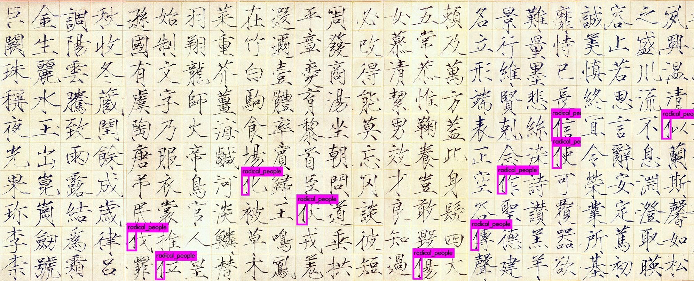
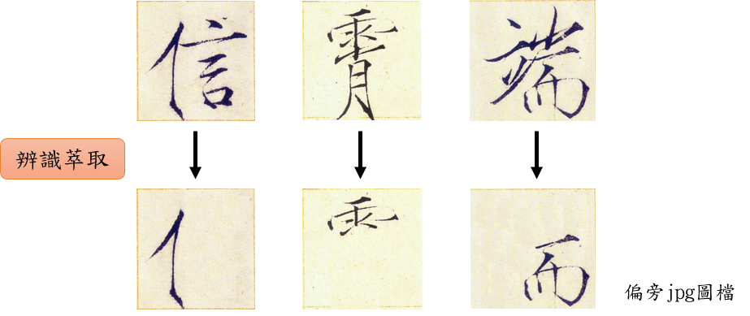

訓練步驟
安裝 Darknet
移動到想要安裝軟體的目錄(linux_directory_path), 準備安裝Darknet
cd /where/you/want/to/install/linux_directory_path
下載 Darknet
git clone https://github.com/pjreddie/darknet.git
移動到Darknet並編譯它
cd darknet
make
安裝 labelimg
使用 pip安裝 labelimg
先確認 pip版本是否為python3
pip -V
會顯示 >> pip 1x.x.x from /where/python3.5/to/install/.../pip (python 3.5)
若只找到python2.x的pip版本, 請嘗試 pip3或 pip3.5
pip3 -V
pip3.5 -V
會顯示 >> pip 1x.x.x from /where/python3.5/to/install/.../pip (python 3.5)
安裝並使用 labelimg
pip install labelImg
labelImg
lableimg 標籤的過程
在Darknet建立專案資料夾
radical_whole ------ cfg ------ weights
|
---- yolos
cfg資料夾 : 放置訓練需要的設定檔
|
--- weights資料夾 放置訓練完的權重
yolos資料夾 : 放置圖片和標記檔
把資料放在對應的資料夾
cfg ------ weights資料夾
|
---- data檔
|
---- name檔
|
---- test檔
|
---- train檔
|
---- cfg檔
weights資料夾 : 不放資料，訓練結果儲存用
data檔 : 可由 /darknet/cfg/coco.data 複製且修改
name檔 : 可由 /darknet/cfg/coco.data 複製且修改
test檔 : 可由 /darknet/cfg/coco.data 複製且修改
train檔 : 可由 /darknet/cfg/coco.data 複製且修改
cfg檔 : 可由 /darknet/cfg/yolov3-tiny.cfg 複製且修改
- names檔：取名為radical_people.names，此檔內容為label的列表，為標記的名稱，例如radical_people，YOLO在訓練與預測時皆需要讀取此檔。
mature
flower
- data檔：取名為radical_people.data，定義label數目以及各個設定檔及weights目錄的path，YOLO訓練及預測時皆會讀取。
classes= 1
train = /home/tars-1422/桌面/ML/an_ML/darknet/radical/cfg/train.txt
valid = /home/tars-1422/桌面/ML/an_ML/darknet/radical/cfg/test.txt
names = /home/tars-1422/桌面/ML/an_ML/darknet/radical/cfg/radical_people.names
backup = /home/tars-1422/桌面/ML/an_ML/darknet/radical/cfg/weights/
- train檔：train.txt，訓練時YOLO會依次讀取該檔內容取出相片進行訓練，通常是所有images檔案中的80%(可以更換訓練比例)。
最好是填入絕對路徑，以免以後此資料夾被移動後，與相對路徑無法匹配。
/home/tars-1422/桌面/ML/an_ML/darknet/radical/yolos/2.jpg
/home/tars-1422/桌面/ML/an_ML/darknet/radical/yolos/3.jpg
/home/tars-1422/桌面/ML/an_ML/darknet/radical/yolos/4.jpg
/home/tars-1422/桌面/ML/an_ML/darknet/radical/yolos/5.jpg
/home/tars-1422/桌面/ML/an_ML/darknet/radical/yolos/6.jpg
. . .
- test檔：test.txt，訓練時YOLO會依次讀取該檔內容取出相片進行validation，通常是所有images檔案中的20%(可以更換訓練比例)。
/home/tars-1422/桌面/ML/an_ML/darknet/radical/yolos/11.jpg
/home/tars-1422/桌面/ML/an_ML/darknet/radical/yolos/12.jpg
/home/tars-1422/桌面/ML/an_ML/darknet/radical/yolos/13.jpg
/home/tars-1422/桌面/ML/an_ML/darknet/radical/yolos/14.jpg
. . .
- cfg檔：yolov3-tiny.cfg， /darknet/cfg/yolov3-tiny.cfg 複製，並依照以下方式修改即可。
Line 3: set batch=24
Line 4: set subdivisions=8
在[net]裡，若沒有訓練經驗，套用上述參數即可。 batch、subdivisions，batch當然愈大愈好，意味的一批訓練需要載入多少image數量， 而subdivisions是為了使用者硬體上記憶體不大的時候所設計，代表需要分幾組。 上述的例子，batch=24，subdivisions=8，所以一組有3個image， 而當記憶體不大的時候，可以調大subdivisions，讓分組數增加， 或者可以直接減少batch數量。
Line 127: set filters=(classes + 5)*3 → in our case filters=18
Line 135: set classes=1 → the number of categories we want to detect
Line 171: set filters=(classes + 5)*3 → in our case filters=18
Line 177: set classes=1 → the number of categories we want to detect
在每一個[yolo]和這個[yolo]上方的[convolutional]裡，若沒有訓練經驗，套用上述參數即可。 filters、classes。classes，是你想要辨識物體的類別數，現在我們只有辨識"亻部首"，所以只有一個class。 而filters的數量，是由(classes + 5)*3公式得到，所以我們需要18個filters。
開始訓練
我們移動到Darknet資料夾下，按右鍵開啟終端機，輸入以下指令就可以開始訓練(此為無gpu版訓練)
訓練好的weight(權重)會儲存在 cfg/weight/裡
./darknet detector train ./radical_double_case/cfg_one/radical_people.data ./radical_double_case/cfg_one/yolov3.cfg
訓練成果 - weight
通常訓練次數都會達到上千或上萬次，
此次對資料做訓練達到20萬次的iteration，使loss達到0.002～0.004的誤差。
Y軸 : loss , X軸 : iteration
訓練成果 - 資料集與辨識結果


訓練成果 - 辨識準確率
透過兩種資料集的訓練，使得最後的訓練模型可以辨識不同字體，
且有不錯的辨識率，總和準確率達到 7成。
準確率公式
趙佶《千字文》 - 辨識結果

| File name | Detected | Miss | Misjudgment | Actual |
| 趙佶_1.jpg | 0 | 0 | 0 | 0 |
| 趙佶_2.jpg | 2 | 1 | 0 | 3 |
| 趙佶_3.jpg | 2 | 0 | 0 | 2 |
| 趙佶_4.jpg | 4 | 0 | 0 | 4 |
| 趙佶_5.jpg | 1 | 0 | 0 | 1 |
| Accuracy = 90% | ||||
預計系統流程

參考資源
YOLO: Real-Time Object Detection
YOLO官網
機器學習實作
YOLO!!!如何簡單使用YOLO訓練出自己的物件偵測!!!
教育部 - 國語小字典
字典 - 部首索引
YOLO 訓練可視化
python script - 可視化顯示訓練過程